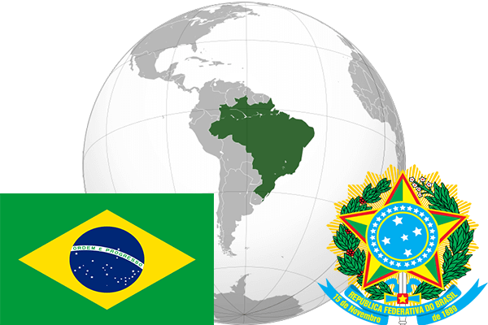

To`liq nomi: Braziliya Federativ Respublikasi
Region: Janubiy Amerika
Qonunchilik shakli: Federativ Respublika
Mustaqillik kuni: 7-sentabr 1822 yil (Portugaliyadan)
Poytaxti: Braziliya
Maydoni: 8 515 770 km² (dunyoda 5 -o`rinda )
Chegaradosh davlatlari: Peru, Kolumbiya, Venesuela, Gayana, Surinam, Urugvay, Argentina, Paragvay, Boliviya
Aholisi: 205 737 996 (dunyoda 5 -o`rinda ) 2016 -yil roʻyxat
Aholi zichligi: 22 /km²
Aholining o`rtacha yoshi: 72,75 yil ( 76,5 ayollar, 69,0 erkaklar)
Rasmiy tili: portugalcha
Dini: Asosiy qismi katolik
Pul birligi: braziliya reali
Telefon prefiksi: +55
Internet domen: .br
Xalqaro tashkilotlarga a`zoligi: BMT (1945 –yildan), Tez rivojlanayotgan mamlakatlar (2001 yildan)
Dengiz va okeanlarga chiqishi: Atlantika okeani
YIM: Butun: $ 3,264 trln, Jon boshiga: $ 16 155 (2014 - yil roʻyxati)
Yirik shaharlari: San-Paulo, Rio-De-Janeyro, Salvador, Braziliya, Fortaleza, Belu- Orizonti, Resifi.